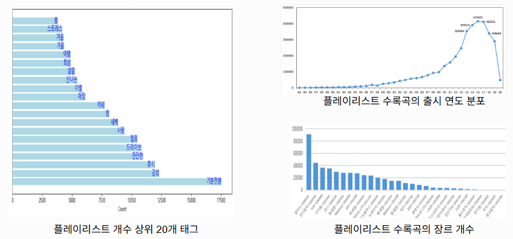
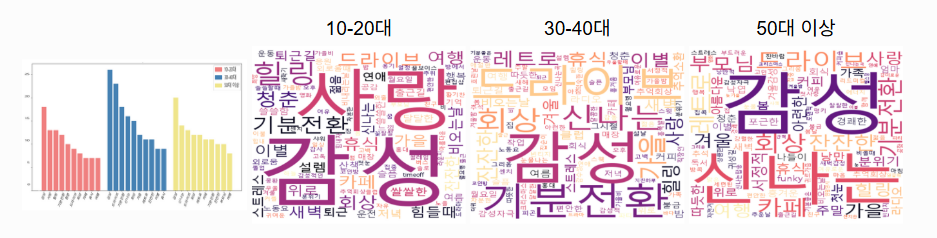
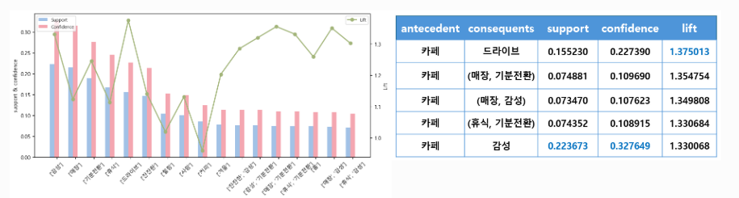
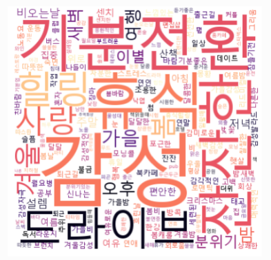

카페 매장을 위한 B2B 음악 추천 서비스로,
매장의 콘셉트·객층·시간대를 반영해 최적의 플레이리스트를 추천합니다.
LLM을 활용한 태그 문맥 이해로 추천 정확도를 높이고,
매장 전용 AI 생성 플레이리스트를 제공하여 브랜드 이미지 강화와 운영 효율을 동시에 지원합니다.
프로젝트명: SoundCake
기간: 2024.07.07 ~ 2024.08.06
팀 구성: 6명 (PL 1, 기획 2, 데이터 1, 모델링 1, 웹개발 1)
역할: 데이터 전처리 및 분석
기술 스택
PythonJupyterpandasnumpymatplotlibmlxtendOpenAI API
서비스 주요 화면
주요 기능
컨텍스트 기반 입력 수집
매장 정보(입지/분위기/영업시간) 입력
고객 정보(성별/연령대) 입력
현재 위치 날씨 자동 반영
플레이리스트 추천
SentenceTransformer 임베딩 기반 후보 탐색
AutoEncoder 잠재공간 유사도 활용
태그 교집합 기준 추천
플레이리스트 생성
매장 전용 플레이리스트 자동 생성
GPT 기반 제목 자동 생성
스테이블 디퓨젼 커버 이미지 생성
Spotify 재생 연동
Spotify OAuth 인증
Web Playback API 음악 재생
플레이리스트 생성/관리
나의 역할
데이터 전처리
카카오 아레나 MELON PLAYLIST DATASET을 활용
(플레이리스트 148,826개, 곡 707,989개, 장르 254개).
결측치 제거 및 불용어 정리(특수문자·숫자, 서비스와 무관한 태그, 단일 문자 제거),
태그 빈도 기준 추출(빈도 ≥ 19),
ChatGPT 프롬프트 기반 태그 6개 범주 자동 분류(분위기/날씨/시간/장소/감정/상황),
연령대 파생 변수 생성.
전처리 후 플레이리스트 84,276개, 곡 426,434개, 태그 790개로 정제.
데이터 분석
플레이리스트 태그 분포·장르 다양성 등 전반적 데이터 구조 분석,
연령대별 주요 태그 비교
(10~20대: 사랑/힐링/청춘, 30~40대: 회상/가을/레트로, 50대 이상: 회상/레트로/부모님),
카페 태그 연관 분석(카페–감성 태그 22.3% 동시 등장, 31.5% 조건부 확률),
카페 관련 플레이리스트 주요 태그 시각화로 감성·겨울·가을·비오는 날 등 계절·날씨 패턴 확인.
플레이리스트 데이터 구조

플레이리스트 태그 및 장르 다양성 분석 결과
연령대별 주요 태그

연령대별 주요 태그 분석 결과
카페 태그 연관 분석

카페 관련 태그 간 연관 분석 결과
카페 관련 플레이리스트 태그 시각화

카페 관련 플레이리스트 주요 태그 시각화 결과
핵심 성과
데이터 품질 향상 및 추천 정확도 개선:
결측 제거, 불용어 정리, 태그 분류 등 전처리를 통해 데이터 일관성을 확보하고 노이즈를 최소화함.
전처리된 태그 데이터를 기반으로 AutoEncoder 구조와 Optimizer를 조정한 결과,
모델 추천 정확도 약 89.7%를 달성하며 성능을 향상시킴.
사용자 인사이트 도출:
연령대·카페 태그 분석을 통해 주요 소비층별 음악 취향 패턴을 도출하고,
매장 콘셉트·시간대·고객 특성에 따라 맞춤형 추천 UX 설계에 반영함.
비즈니스 확장 가능성 검증:
분석 결과를 기반으로 매장별 음악 소비 패턴을 데이터 자산화하고
브랜드 맞춤형 음악 추천 서비스로 확장 가능한 구조를 검증함.
기술적 도전과 해결
문제 — 불용어 및 비관련 텍스트 제거 규칙 정의의 어려움
원인:
플레이리스트 태그 데이터는 사용자가 자유롭게 입력한 자연어 형태로 구성되어 있어
서비스와 무관한 텍스트가 다수 포함되어 있었음.
관련 없는 태그를 자동으로 구분하기 위한 일관된 규칙을 정하기 어려웠음.
해결:
EDA를 통해 태그의 빈도와 형태 패턴을 분석한 뒤,
3단계 전처리 규칙을 수립함.
① 특수문자·숫자 제거 (ex. '#', '123' 등)
② 서비스 관련 없는 일반 단어 제거 (ex. '노래', '음악', '차트', '플레이리스트' 등)
③ 의미 없는 단일 문자 및 의성어 필터링 (ex. 'R', '쫑', '헿' 등)
Python 정규표현식(Regex)과 토큰 필터링 함수로 구현하여
사람이 직접 확인하지 않아도 자동으로 불필요한 태그를 정리할 수 있도록 함.
결과:
불필요한 태그가 전체의 약 22% → 10% 이하로 감소했으며
정제된 태그 데이터를 기반으로 추천 모델의 입력 품질이 향상됨.
AutoEncoder 추천 모델의 정확도가 약 89.7%까지 개선됨.
문제 — 라벨 데이터 부재로 인한 태그 분류 어려움
원인:
공개 데이터셋에 태그의 상위 카테고리(분위기/날씨/시간/장소/감정/상황)가 미리 라벨링되어 있지 않아
규칙 기반 분류만으로는 일관된 분류 체계를 확보하기 어려웠음.
해결:
GPT 기반 프롬프트 분류를 도입하여 사전 정의된 6개 카테고리 중 하나로 태그를 자동 분류하도록 구성함.
사람이 직접 라벨링하지 않아도 데이터의 의미적 맥락에 따라 카테고리화가 가능하도록 하였음.
결과:
수작업 라벨 없이도 초기 카테고리별 태그 세트를 자동 구축했고,
5번 반복 분류 중 4번 이상 동일한 결과만 반영하는 방식으로 품질을 안정화함.